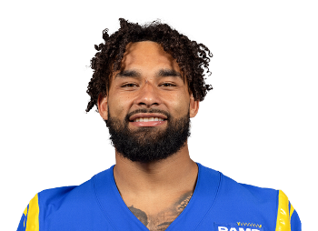

BALL KEEP
Dynasty · redraft · ball
Player file · RB LAR

Kyren Williams
RB · LAR
Plus
- Yates PPR 32nd / STD 27th — Rams RB1 when the touches are his; punch-in TD clip is the job.
- Win-now scoring environment next to Nacua and Stafford.
Minus
- Off The Keep top 50 — size/mileage/committee is the dynasty packet.
- Los Angeles will keep a second back in the building; feature security is never full.
- A 2026 redraft name more than a 2029 Keep name — missing The Keep top 50.
Ball Keep take
Kyren Williams is a redraft RB2 who dynasty treats as replaceable, and the 2025 Rams touchdown clip is why both rooms have a point. He finishes. He scores. He plays on a good offense. Yates 32nd, standard 27th, Keep off the top 50.
If you are drafting 2026 only, take him in the RB2 range and start him. If you are drafting 2026-2029, take Hampton or Love instead. The Rams will get theirs either way. Your Superflex roster has to choose a time horizon.
Sell in dynasty to the Puka owner who wants the stack. Hold in redraft until the committee tweets get loud, then start him anyway until the snap share actually dies.
Tape · 2025 season
Rams answer back with a Kyren Williams touchdown
Best available public clip of a 2025 NFL play. Not affiliated with the NFL, NCAA, or the posting channel.
Same position on this hub
Bijan Robinson · Jahmyr Gibbs · Ashton Jeanty · De'Von Achane · Jeremiyah Love · Omarion Hampton